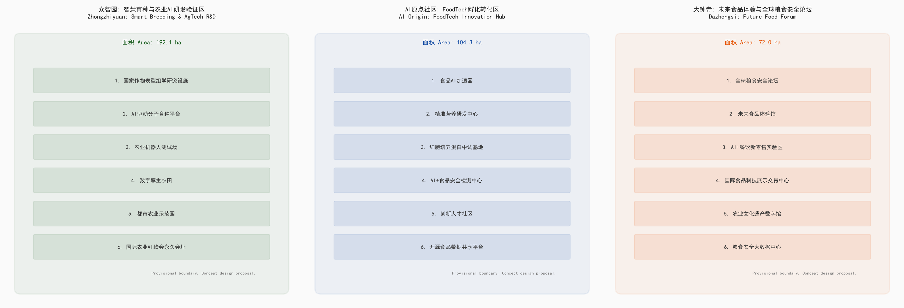
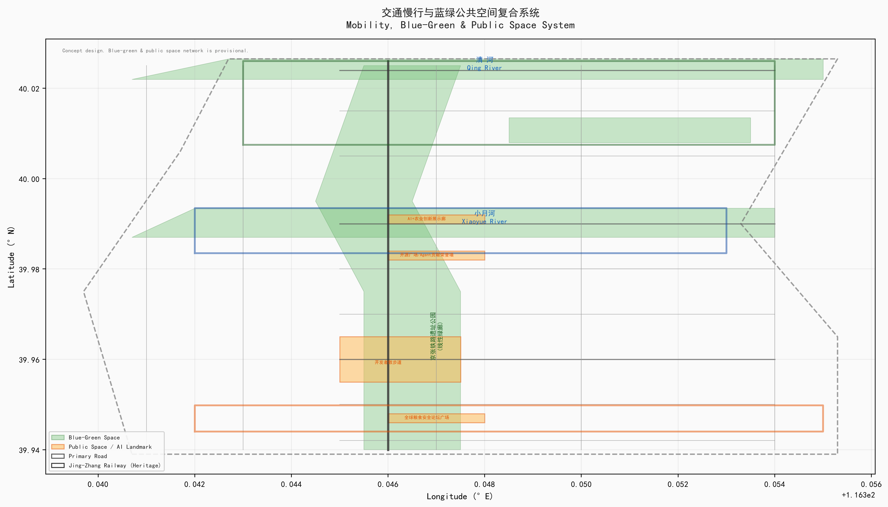

京张智田：从铁路运粮到AI种粮
AI驱动的都市农业创新走廊
一、设计依据与资料清单
| 资料来源 | 权威等级 | 用途 |
|---|---|---|
| 资格预审公告 (2026-05-09) | A0 官方公告 | 项目范围、设计任务 |
| Agent任务书摘录 (2026-05-18) | 已清权用户文件 | 六项Agent任务 |
| 三区两翼产业布局 (2026-04-03) | A1 官方发布 | 产业定位 |
| 城市设计管理办法 (住建部, 2017) | A0 国家标准 | 城市设计深度 standard:MOHURD-URBAN-DESIGN-MEASURES |
| 控规编制审批办法 (住建部) | A0 国家标准 | 控规参照 standard:MOHURD-CONTROL-DETAILED-PLANNING |
| 用地用海分类指南 (自然资源部, 2023) | A0 国家标准 | 用地分类代码 standard:MNR-LAND-USE-CLASSIFICATION-GUIDE |
| 生成式AI管理办法 (2023) | A0 法规 | AI治理边界 standard:GENERATIVE-AI-INTERIM-MEASURES |
关键数据缺口：官方精确GIS/CAD边界尚未公开获取。本方案使用仓库提供的临时粗略边界（official_boundary=false）data:geometry/site_boundary.geojson#PROV-SITE-001 metric:total_area

二、三层范围工作框架
| 层级 | 面积 | 边界依据 | 设计深度 |
|---|---|---|---|
| 统筹研究范围 | 43.6 km² | 北五环—京藏高速—西直门外大街—万泉河路 | 产业战略研究 |
| 总体设计范围 | 11.4 km² | 京张遗址公园周边1-2km provisional | 控规城市设计深度 depth:land_use_layout |
| 重点区域范围 | 368.4 ha | 众智园+AI原点+大钟寺 provisional | 规划综合实施方案深度 depth:key_area_detailed_design |

三、统筹研究范围产业与未来城市研究
命名体系：京张智田 (Jing-Zhang Smart Farm)。Logo概念：京张铁路"人字形"轨道 × 麦穗DNA双螺旋 × 芯片线路。
五大功能空间落位：AI全栈自主→众智园育种集群；世界级AI生态→AI原点FoodTech廊；场景赋能→小月河翼；活力城市→遗址公园带；治理话语权→大钟寺论坛。
全球案例：荷兰Wageningen Food Valley、以色列AgriFood Tech、新加坡FoodInnovate、美国39 North、深圳国际食品谷、日本筑波、英国Norwich Research Park — 7个案例，核心规律为"科研锚机构+全链条空间+政策工具包+朝圣地效应"。agent.2
四、总体设计范围城市更新
"一带三区两翼"空间结构：京张遗址公园南北主轴串联三区，西翼中关村科技服务，东翼小月河场景赋能。
用地功能比例(概念)：科研/教育 19.2% | 商业/商务 35.1% | 绿地/公共 25.98%(复算)/28.5%(目标) | 居住 10.9% | 混合/服务 10.3% metric:land_use_composition
更新框架(分类原则)：保留=保护+功能升级 | 改造=适应性再利用 | 新建=国际征集+定制建设 | 拆除=腾笼换鸟 （按任务书边界条款，本方案不输出具体拆改留比例，待现状建筑调查与产权数据获取后由专业团队确定）
五、重点区域详细设计
| 重点区 | 面积 | 核心功能 | 建筑规模 |
|---|---|---|---|
| 众智园·智慧育种 | 192.1 ha | AI育种平台、表型组学设施、机器人测试场 | 待控规确定（变量） |
| AI原点·FoodTech | 104.3 ha | 食品AI加速器、精准营养、创新人才社区 | 待控规确定（变量） |
| 大钟寺·未来食品 | 72.0 ha | 全球粮食安全论坛、未来食品体验馆 | 待控规确定（变量） |
data:geometry/key_areas.geojson#PROV-KEY-001 data:geometry/key_areas.geojson#PROV-KEY-002 data:geometry/key_areas.geojson#PROV-KEY-003

六、AI创新生态、人才画像与AI+场景
8类用户画像（含包容性画像）：AI育种科学家、FoodTech创业者、AI工程师/开发者、本地居民与老年人、儿童/照护者、残障人士、低收入群体与既有商户、国际农业政策制定者 agent.3
12张AI+场景卡（矩阵格式：场景|空间|数据|模型|运营|人工复核|退出机制）+ 3张测试验证场景：涵盖AI育种、数字孪生农田、食品AI加速器、精准营养、食品安全检测、未来食品体验、开源社区、价格预测、农民培训、铁路文化AI导览等。
3个产业测试验证场景：大田作物AI育种全流程 | FoodTech加速器毕业率 | 经济产出乘数模型
七、用地、建筑规模与拆改留方案
用地方案见 geometry/land_use.geojson (9个用地多边形)，建筑见 geometry/buildings.geojson (48栋概念建筑，仅标注空间位置)。按任务书边界条款，本方案不直接提供建筑总量、FAR与限高数值，仅提供计算方法（建筑总量=用地面积×片区控规FAR），待控规条件确认后由专业团队计算。
用地分类采用自然资源部2023年《分类指南》体系 standard:MNR-LAND-USE-CLASSIFICATION-GUIDE
八、交通、轨道、市政与公共服务设施
轨道：13号线、10号线、4号线三线交汇。
慢行："一纵三横"骨架，总长约25km(概念)。
新基建：农业AI超算中心(100PFLOPS概念)、分布式能源、端侧算力传感器网络。
见 geometry/roads.geojson data:geometry/roads.geojson

九、蓝绿空间、公共空间与城市风貌
蓝绿系统：京张遗址公园(7km线性绿廊) + 清河滨水 + 小月河生态 + 都市农业示范园 data:geometry/green_space.geojson#GRN-001
3个AI朝圣地标：①Agent贡献荣誉墙(开源广场) ②全球AI种业里程碑(众智园) ③"麦穗之门"未来食品地标(大钟寺) agent.4
公共空间：4处标志性公共空间节点，比例约8.2% data:geometry/public_space.geojson
风貌基调："百年京张工业遗风 + AI科技极简 + 农业生态有机"
十、更新项目清单与分期计划
| 分期 | 时间 | 核心项目 | 所需输入 |
|---|---|---|---|
| 近期 | 2026-2028 | 论坛方案征集、FoodTech中试车间、Agent荣誉墙 | 征集/改造/设备预算（待审批） |
| 中期 | 2028-2031 | 食品AI加速器、人才社区、遗址公园贯通 | 工程量+标准+设备预算（待审批） |
| 远期 | 2031-2035 | 智慧育种集群、论坛会址、超算中心 | 国家重大工程立项程序 |
按任务书边界条款，本方案不直接提供投资金额；所有项目须经正式立项、规划设计与审批程序后确定。
见 geometry/phasing.geojson data:geometry/phasing.geojson#PHS-001
十一、指标体系与合规矩阵
15项核心指标见 metrics.json，9项合规检查见 compliance_matrix.json，8项标准覆盖见 standard_matrix.json，12项设计深度见 design_depth_matrix.json。
关键指标：绿地率25.98%(复算)/28.5%(目标) metric:green_ratio | 公共空间3.08%(复算)/8.2%(目标) | 场景卡12张 | 测试场景3个 | 用户画像8类 | 朝圣地标3个 | 生态案例7个

十二、文化融合叙事
"三生万物"叙事弧线：铁路之生(1909) → 科技之生(1988-2020s) → 智田之生(2026→)。agent.5
三条文化导览路线："百年一瞬"铁路遗产线 | "从代码到餐桌"FoodTech体验线 | "一粒种子的旅程"科普线
十三、全球AI创新活动与运营
| 季度 | 活动 | 规模 |
|---|---|---|
| 春 | 京张AI春耕节 | 1000人+ |
| 夏 | 全球FoodTech黑客松 | 500人 |
| 秋 | 全球粮食安全论坛(GFSF) | 3000人+ |
| 冬 | AI种业峰会+Agent年度授勋 | 2000人 |
开发者社区：AgriCode开源平台、FoodTech Founders Club、国际AgAI学者网络。agent.6
长期品牌："京张智田"全球注册(概念)、《全球农业AI发展年度报告》、全球AgTech"海淀指数"。
十四、风险、版权与合规说明
关键限制声明：
- 本方案为AI Agent生成的开放共创建议，不构成政府审定结论
- 所有空间边界使用provisional几何 (official_boundary=false)
- 所有建筑规模、投资金额为概念估算
- 产业招商和政策建议为方向性意见
- 机构合作意向为概念设想，不代表相关方已确认
详见 report/copyright_statement.md。